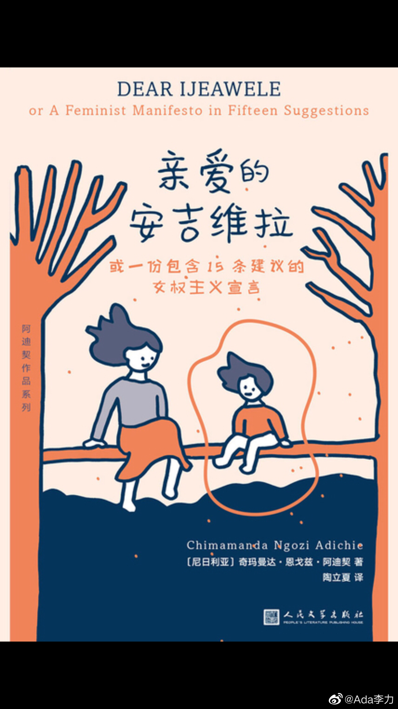

@Ada李力:
#不明所以#
在读尼日利亚作家阿迪契的长信《亲爱的安吉瑞拉》，我会不断回想到自己所经历过的很多事，亚洲和非洲有那么多不同，但是做为女性，又有太多相似的经历。
记得第一次恋爱时，跟当时男友讨论过将来谁做饭的问题，他大言不惭连商榷口吻都没有，就说：“当然是你做饭了”，我怒了：“凭什么？就凭你长了个JB？”，因为这个质问，我又被男友贴上了脾气暴躁的标签。
这封信不长，但为把千字文章都用“太长不看”理由拒绝的读者着想，这里重复下作者的两个“女权主义工具”，第一个是：我是重要的。第二个是提问：能在交换性别角色后获得相同的结论吗？ 作为女性，遇到任何问题，那些让你不舒服，但似乎你还不能理直气壮地说出自己不舒服的瞬间，用用这两个工具，有奇效。
信的内容很好，我很后悔自己没有在刚做母亲时读到这封信，但学习什么时候都不会太晚。摘抄些信里的段落吧。
“我不再说“她为他生了孩子”，我会说“她和他生了孩子”。当我听到男人说“她怀着我的孩子”时会勃然大怒。“怀着我们的孩子”就听来更顺耳，也更正确。”
如果不是有女权，我可能也意识不到这些熟悉常见的话，有什么问题。
“建议七：千万不要将婚姻当作成就。找到方法让她明白婚姻既不是成就也不是某种她应该渴求的东西。婚姻或许幸福或许不幸，但它都不是一项成就。
我们认定女孩渴望婚姻而不会认为男孩渴望结婚，所以一开始就存在着可怕的不平衡。女孩会长大成为对婚姻抱有执念的女人。男孩会长大成为对婚姻并无执念的男人。女人嫁给这样的男人。这关系生来就不对等，因为婚姻制度对其中一方来说比对另一方更重要。是否该思索，在如此多的婚姻关系中女性们会牺牲更多，折损自己，是因为她们必须持续不断地维系不对等的交流？（这种不对等的后果之一是很不公正又很常见的现象：两个女人在大庭广众之下争夺同一个男人，而男人保持沉默。）”
女性关于婚姻的执念太多了。最大的危险是，等到意识这种执念有问题时，已经太晚，而无法重来一遍人生。
“让她明白她无需招所有人喜欢。告诉她如果有不喜欢她的人，就会有喜欢她的人。告诉她，她不只是被喜欢或被讨厌的客体，她还是可以去喜欢和讨厌的主体。在她的青少年时期，如果她回家后为某些不喜欢自己的男孩哭泣，让她明白她也可以选择不要喜欢这些男孩。”
我希望自己能早点懂得这些，更希望我能更早一点告诉女儿这些话。
长信的电子版链接在评论里。
@凝碧的波痕
在读尼日利亚作家阿迪契的长信《亲爱的安吉瑞拉》，我会不断回想到自己所经历过的很多事，亚洲和非洲有那么多不同，但是做为女性，又有太多相似的经历。
记得第一次恋爱时，跟当时男友讨论过将来谁做饭的问题，他大言不惭连商榷口吻都没有，就说：“当然是你做饭了”，我怒了：“凭什么？就凭你长了个JB？”，因为这个质问，我又被男友贴上了脾气暴躁的标签。
这封信不长，但为把千字文章都用“太长不看”理由拒绝的读者着想，这里重复下作者的两个“女权主义工具”，第一个是：我是重要的。第二个是提问：能在交换性别角色后获得相同的结论吗？ 作为女性，遇到任何问题，那些让你不舒服，但似乎你还不能理直气壮地说出自己不舒服的瞬间，用用这两个工具，有奇效。
信的内容很好，我很后悔自己没有在刚做母亲时读到这封信，但学习什么时候都不会太晚。摘抄些信里的段落吧。
“我不再说“她为他生了孩子”，我会说“她和他生了孩子”。当我听到男人说“她怀着我的孩子”时会勃然大怒。“怀着我们的孩子”就听来更顺耳，也更正确。”
如果不是有女权，我可能也意识不到这些熟悉常见的话，有什么问题。
“建议七：千万不要将婚姻当作成就。找到方法让她明白婚姻既不是成就也不是某种她应该渴求的东西。婚姻或许幸福或许不幸，但它都不是一项成就。
我们认定女孩渴望婚姻而不会认为男孩渴望结婚，所以一开始就存在着可怕的不平衡。女孩会长大成为对婚姻抱有执念的女人。男孩会长大成为对婚姻并无执念的男人。女人嫁给这样的男人。这关系生来就不对等，因为婚姻制度对其中一方来说比对另一方更重要。是否该思索，在如此多的婚姻关系中女性们会牺牲更多，折损自己，是因为她们必须持续不断地维系不对等的交流？（这种不对等的后果之一是很不公正又很常见的现象：两个女人在大庭广众之下争夺同一个男人，而男人保持沉默。）”
女性关于婚姻的执念太多了。最大的危险是，等到意识这种执念有问题时，已经太晚，而无法重来一遍人生。
“让她明白她无需招所有人喜欢。告诉她如果有不喜欢她的人，就会有喜欢她的人。告诉她，她不只是被喜欢或被讨厌的客体，她还是可以去喜欢和讨厌的主体。在她的青少年时期，如果她回家后为某些不喜欢自己的男孩哭泣，让她明白她也可以选择不要喜欢这些男孩。”
我希望自己能早点懂得这些，更希望我能更早一点告诉女儿这些话。
长信的电子版链接在评论里。
@凝碧的波痕
- 